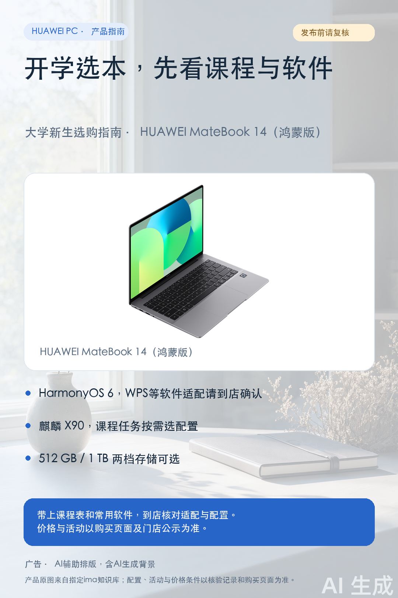

正在加载文章快照…
独立研发作品 · 公开评审展示
从真实资料，
到可核验的图文成品。
面向华为 PC 导购与内容运营。先理解人群和任务，再用指定 ima 产品事实与原图，组织适合平台的内容；每次交付都保留来源、核验与待确认项。
只读展示已完成的运行结果，无需登录或配置密钥。完整工作台已部署到魔搭，需要独立工作台账号登录；云端接口全流程与重启恢复已验，用户已确认网页登录成功。
查看完整应用的云端验收摘要 ↗ima 事实与原图DeepSeek 文本与搜索Qwen 背景与视觉核验

产品主体仍为 ima 原图AI 仅生成背景 · 独立图层按比例合成
205项
本地程序与部署测试通过外部接口使用隔离模拟
32组
八场景 × 四平台规则检查规则验证，不是 32 篇模型实测稿
4份
查看证据范围 →Dify DSL 本地校验通过云端导入与回调仍待验证
REAL OUTPUTS
同一需求，两种真实交付
大学新生 · 开学季 · 比较选型 · HUAWEI MateBook 14（鸿蒙版）
以下为 2026-10-19 真实模型运行快照。文中 6000 元是用户自述预算；尚无已核实最低到手价。正式发布前仍需复核价格、软件适配与广告及 AI 内容标识。
Qwen-Image 生成背景；ima 原图独立贴层；Qwen 视觉辅助核验与程序像素、排版输入复核通过。视觉核验不构成华为官方设计认证。
EVIDENCE, WITH LIMITS
核验结果，连同边界一起交付
公众号文章的真实核验快照
“通过”表示本次配置、输入与规则下的检查结果；模型辅助核验不替代来源证据、发布者复核或平台审核。
CONTEXT → PLATFORM
换场景，换切入点；换平台，换交付方式
以下可交互查看 8 × 4 规则策略及本地规则模式的检查快照。
这是确定的策略查询。切换不会调用模型、生成新文章或产生费用；32 组合结果不代表 32 篇真实模型成稿的质量评审。
开学季 · 公众号
规则检查无阻断内容关注
信息不足时追问
平台组织规则
本次规则稿标题快照
4张图
HOW IT WORKS
创作与计算，各有明确职责
自研后端管理证据、任务与交付；Dify 可作为云端编排入口。当前真实模型案例通过后端直连完成。
- 场景解析
- 平台策略
- ima 检索
- 事实提取
- 图文编排
- 内容生成
- 事实与图片核验
- 合规检查
- 导出
图形化工作台
多轮澄清、需求卡、改稿、配图、历史版本与下载；事实缺失或检查阻断时明确提示。
原生 HTML / CSS / JavaScript证据与确定性规则
ima 产品事实和原图绑定具体型号。Decimal 报价引擎计算优惠、资格和叠加条件，不把计算交给模型。
Python / FastAPI / SQLite模型能力
DeepSeek 负责文本、辅助审校与搜索线索；Qwen-Image 仅生成背景；Qwen 视觉辅助核验成品。
真实接口验证 / 密钥仅服务端可复核交付
四部分公开报告、引用来源和待确认项；文章 TXT / HTML / JSON / ZIP，海报 PNG / 单页 PDF。
编辑保存后复核 / 版本可追溯PROMPT DESIGN
把证据边界写进系统提示词
同时约束事实来源、价格表达、主体图片、平台差异与不确定性。
产品参数、功能、限制和卖点只能引用输入中 verified=true 且绑定型号的 facts。 价格只能逐字使用规则引擎的结果和对应条件，禁止自行计算或承诺未确认身份权益。 根据平台规则改变结构、语气、篇幅、图片数量和行动引导。 产品主体图片只能从已确认型号的 ima 资产选择；允许生成背景，不得重绘产品主体。 无法确认的信息不写成事实；有资料冲突时列出问题并停止受影响内容交付。系统提示词节选；完整内容及分平台策略随源码提供。
REPRODUCIBLE & HONEST
可复现，也明确尚未完成什么
在自己的环境运行
- 获取仓库与依赖
Python 3.11+；从真实 GitHub 仓库获取源码，锁定依赖通过 uv 安装。前端无需 Node.js 构建。
- 启动图形工作台
sh scripts/start.sh默认本机地址为
http://127.0.0.1:8787，不会自动提供公网服务。 - 配置自己的授权
在本机工作台填写模型配置；ima 凭证按 README 从环境变量或用户私有配置读取。不要在公开展示页输入密钥。
- 先复现，再接 Dify
运行测试与 DSL 校验；Dify 云端导入、公网 HTTPS、服务端鉴权和回调数据库一致性需独立验证。
已知限制与当前状态
- 待联调Dify 云端编排
完整 Docker 应用已在魔搭构建运行；当前后端直连模型。4 份 DSL 已通过本地校验，Dify 云端导入与工具回调尚未验证。
- 待确认杭州最低到手价
七渠道结算价自动采集未完成。搜索只是线索；必须补齐 SKU、商家、时效、库存与资格证据后计算。
- 范围单操作人 MVP
使用 SQLite；未实现多租户和多实例生产架构。资料与软件适配覆盖受指定 ima 档案与权限限制。
- 人工复核发布与品牌边界
不自动发布社交平台。合规和视觉是辅助检查。本项目是独立作品，不代表华为官方产品、承诺或设计认证。